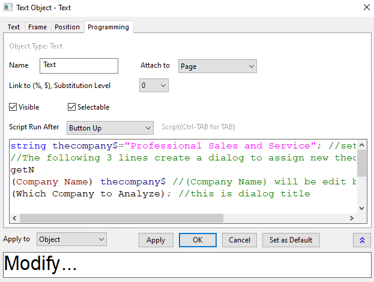
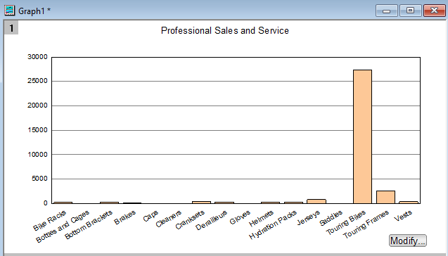
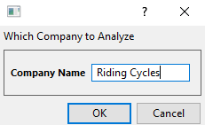
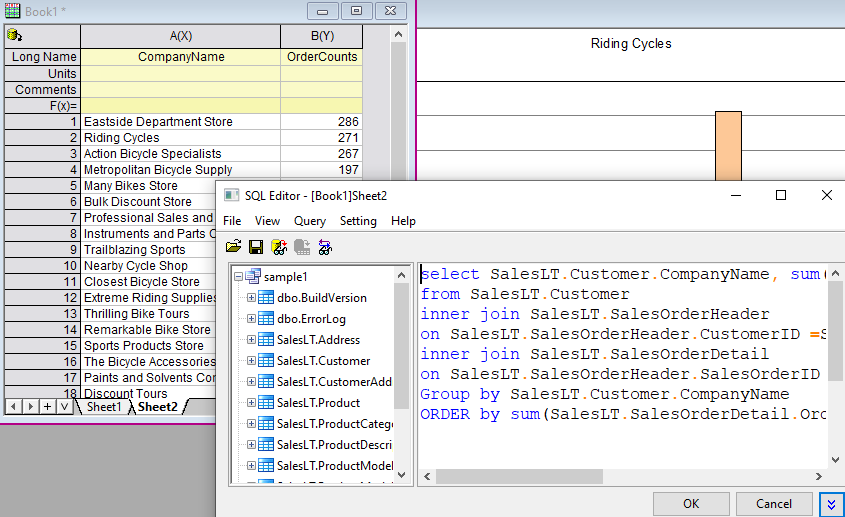

Diagramm durch Neuimport von Daten aus Datenbank aktualisieren
Zusammenfassung
 |
Die in diesem Tutorial verwendete Datenbank wurde auf Microsoft Azure eingerichtet.
|
Dieses Tutorial ist eine Fortsetzung des vorherigen Tutorials Datenbankimport durch LabTalk-Substitution aktualisieren. Es zeigt, wie Sie mit LabTalk-Skript eine Schaltfläche zum Diagramm hinzufügen, um den Dialog GetN zu öffnen, einen Unternehmensnamen einzugeben und die Datenbank, basierend auf dem neuen Unternehmensnamen, neu zu importieren und eine aktualisierte Grafik zu erhalten.
Das Vorgehen basiert auf Origin 2023b.
Was Sie lernen werden
Dieses Tutorial zeigt Ihnen, wie Sie:
- Fügen Sie mit Skript eine Schaltfläche zum Diagramm hinzu.
- Wie Sie einen einfachen Dialog erstellen, um eine neue Eingabe zu erhalten.
Schritte
Schaltfläche zum Ausführen eines LabTalk-Skripts hinzufügen
- Klicken Sie mit der rechten Maustaste in die untere rechte Ecke von Graph1, das Sie im vorherigen Tutorial Datenbankimport durch LabTalk-Substitution aktualisieren erstellt haben. Wählen Sie Text hinzufügen .... Geben Sie Modizifieren ein, um eine Textbeschriftung zu erstellen.
- Klicken Sie mit der rechten Maustaste auf den Text Update und wählen Sie Einstellungen im Kontextmenü, um den Dialog Textobjekt zu öffnen. Gehen Sie zur Registerkarte Programmierung. Hinweis: Wählen Sie in Versionen vor Origin 2017 Programmierablauf im Menü, um den Dialog Programmierablauf zu öffnen.
- Setzen Sie Kriterien für Skriptausführung auf Mausklick und geben Sie das folgende Skript in das untere Textfeld ein. Klicken Sie auf OK.
string thecompany$="Professional Sales and Service"; //set first company name //The following 3 lines create a dialog to assign new thecompany$ string value getN (Company Name) thecompany$ //(Company Name) will be edit box label in dialog (Which Company to Analyze); //this is dialog title dbimport iw:=[book1]sheet1!; //reimport data of new company from database to Sheet1 of Book1

Das Textobjekt verwandelt sich in eine Schaltfläche.

Schaltfläche zum Modifizieren des Imports verwenden
- Klicken Sie auf die Schaltfläche Modifizieren... und geben Sie den neuen Unternehmensnamen Riding Cycles ein.

- Klicken Sie auf OK. Die Daten werden erneut in Sheet1 von Book1 importiert und das Diagramm wird automatisch aktualisiert.

- Um alle Unternehmensnamen und die Gesamtanzahl der Bestellungen zu sehen: Klicken Sie mit der rechten Maustaste auf den Reiter und wählen Sie Ohne Daten duplizieren, um Sheet2 zu erstellen.
- Klicken Sie auf
 im Sheet2 und wählen Sie SQL-Editor.
im Sheet2 und wählen Sie SQL-Editor.
Modifizieren Sie Anfrage folgendermaßen:
SELECT SalesLT.Customer.CompanyName, SUM(SalesLT.SalesOrderDetail.OrderQty ) AS OrderCounts FROM SalesLT.Customer INNER JOIN SalesLT.SalesOrderHeader ON SalesLT.SalesOrderHeader.CustomerID =SalesLT.Customer.CustomerID INNER JOIN SalesLT.SalesOrderDetail ON SalesLT.SalesOrderHeader.SalesOrderID =SalesLT.SalesOrderDetail.SalesOrderID GROUP BY SalesLT.Customer.CompanyName ORDER BY SUM(SalesLT.SalesOrderDetail.OrderQty ) DESC
- Klicken Sie auf OK. Alle Unternehmensnamen und die Gesamtanzahl der Bestellungen werden gezeigt, so dass Anwender beim Ändern des Unternehmensnamens für einen Neuimport einfach auf dieses Blatt verweisen können.
